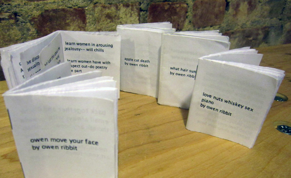

Pm-mkr is an application that scrapes your Gmail chat logs to generate poems using keywords that you input. It formats the resulting poem in a one page double sided chapbook that can printed out, folded up, and bound with staples. There are instructions for creating the book following the completion of the program. You can download the software to run on Mac or PC:
To run it, you first need to enable IMAP in Gmail (instructions). Once you have done that, just open the program archive and double click on “pmmkr”. For PC users, please see PC instructions. It will probably break once or twice when you’re using it. Just restart the program. I think it will work, eventually, in most cases. Thanks for being patient. Also, if the first poem you generate isn’t good, or has very few lines or something, just try running the program again. You won’t have to download the g-chats again, so it will only take a moment. And try using different key words.
There are still some issues with the program. The main issue is that it only works with Gmail users who have significant Gchat logs. This describes most of my friends and people I know, but probably doesn’t describe most people. It certainly doesn’t describe my parents. So the audience is pretty limited in that sense, but I think its okay, because I think the majority of people who would even be interested in using this software are somewhat likely to be Gchat users. Another issue is security—I say it in the program, and my code is completely open for people to read so you can find out for sure, but there’s no way to really prove that I’m not doing anything with the Gmail emails and passwords that need to be entered for the program to run. I haven’t come up with a satisfying solution to this problem and I’ve kind of resigned for now to the idea that people will either have to trust me or not care. The imaplib uses SSL to login to Gmail, which I assume provides enough security for the average user, but I don’t know enough about those issues to guarantee that using the program is completely secure. The only alternative I can suggest is just changing your Gmail password, either temporarily while you use the program, or changing it to something new after you use the program.
